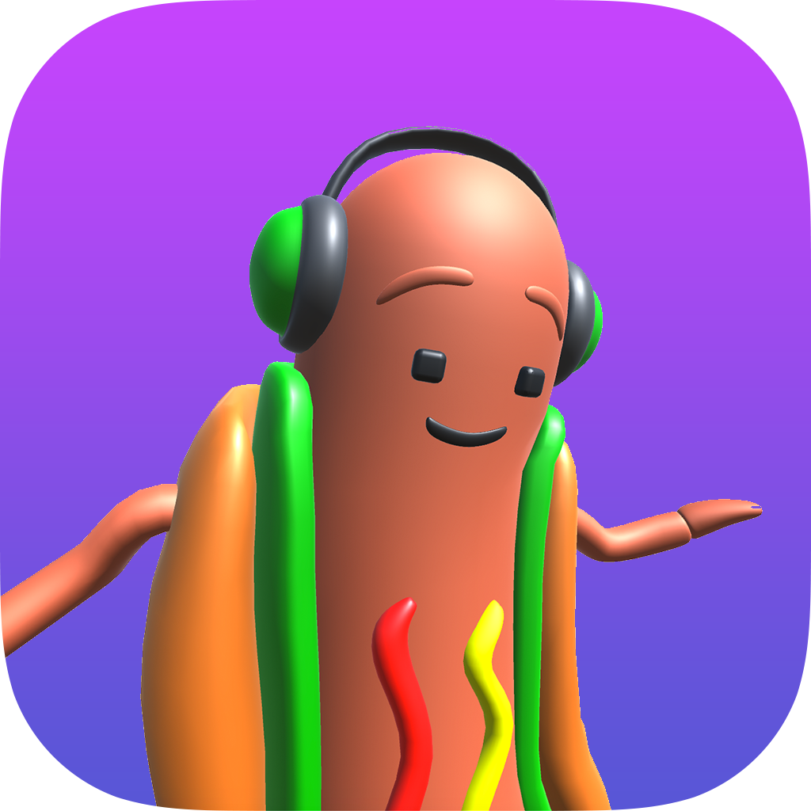

Word Bridges
2021
Unity, C#
Node.js backend for fuzzy word validation
Sold as a template on Sellmyapp



Dancing Hotdog
2017
Unity, C#
After a hard grind and talks with Ketchapp the summer of 2017, Dancing Hotdog tragically died unpublished.
Woto
2016
HTML5 Canvas + JS frontend
Node.js backend
An experimental multiplayer sandbox.
Woto saw hundreds of players fight, collaborate, and socialize in realtime.
Piston Flip
2015
Xcode, Swift
The first game I released.
Self-published on iOS.